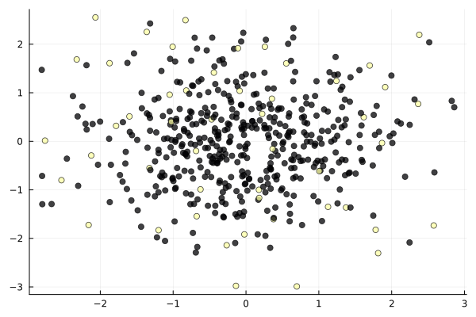
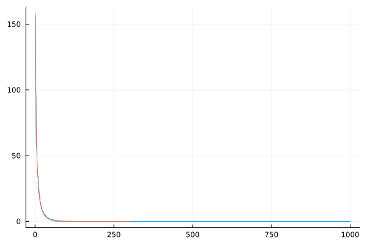
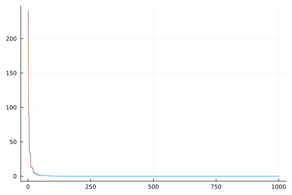
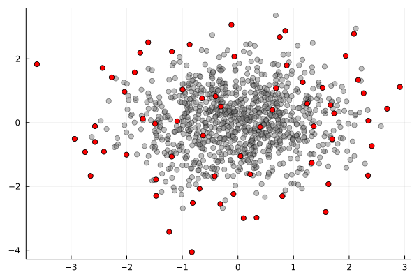
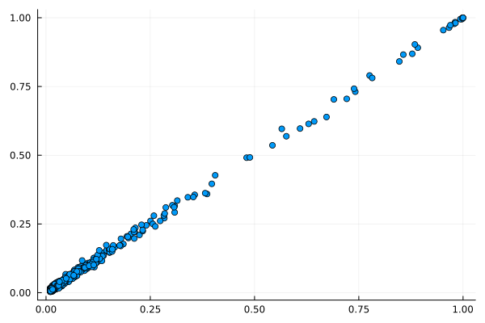
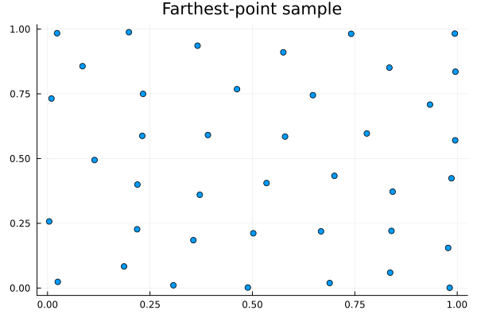
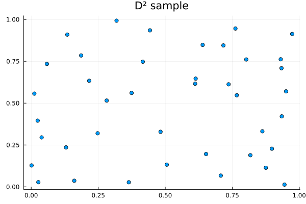
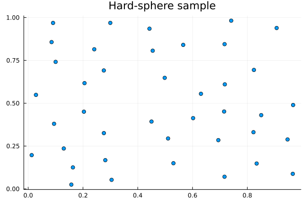
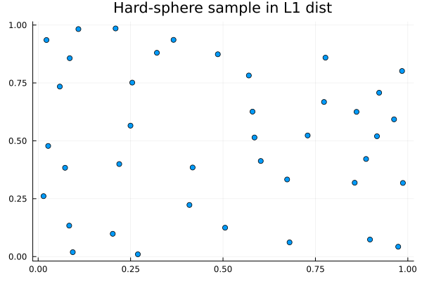
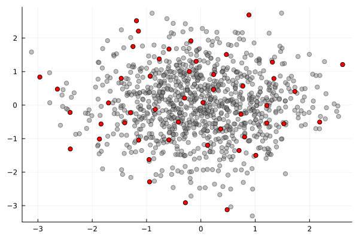

Determinantal.jl: a Julia package for sampling Determinantal Point Processes
Determinantal.jl provides some types and functions for sampling from DPPs (and related models).
Brief background
A Determinantal Point Process is a random subset $\X$ of a "ground set" $\Omega$. Here we think of $\Omega$ as a set of items or points, and $\X$ is a random subset selected in a way that preserves some of the "diversity" in $\Omega$.
The traditional definition of a DPP you will see in most of the literature is based on inclusion probabilities. We say $\X$ is a DPP if for all fixed subsets $S \subseteq \Omega$ there exists a matrix $\bK$ (called the marginal kernel) such that:
\[p(S \subseteq \X) = \det \bK_{S}\]
where $\bK_{S}$ is the sub-matrix of $\bK$ indexed by $S$. For instance, if $S=\{i\}$, a single item, then this says that
\[p(i \in \X) = K_{i,i}\]
so the inclusion probabilities for single items can be read out of the diagonal of $\bK$. If $S =\{ i,j\}$, then we have
\[p(S \subseteq \X) = K_{ii} K_{jj} - K_{ij}^2\]
Because $K_{ij}^2$ is non-negative, this means that the probability of getting both $i$ and $j$ is less than the product of the invididual probabilities. This tells us that a DPP is in general repulsive (compared to a Poisson process).
Here is an example of defining a very simple DPP in Determinantal.jl, over a set of size 2, using the matrix
\[\bK = \begin{pmatrix} 3/4 & 1/4 \\ 1/4 & 3/4 \end{pmatrix}\]
using Determinantal
#A 2x2 matrix, so here Ω={1,2}
K = [3 1; 1 3]/4
dpp = MarginalDPP(K)
Determinantal.sample(dpp) #𝒳, a random subset
#estimate prob. that item 1 is in 𝒳
sum([1 ∈ Determinantal.sample(dpp) for _ in 1:1000])/1000
#should be approx. equal to K[1,1]0.756The name "MarginalDPP" refers to the fact that the DPP is defined based on its marginal kernel. There is one important constraint when defining DPPs based on the marginal kernel $\bK$; the eigenvalues of $\bK$ need to be in $[0,1]$. Because of this, and for reasons of interpretability, it is often more convenient to work with L-ensembles or extended L-ensembles.
L-ensembles are a (large) subset of DPPs with the following property. We say $\X$ is a L-ensemble if there exists $\bL$ such that:
\[p(\X=X) \propto \det \bL_{X}\]
This equation relates the likelihood (probability mass function) of the DPP to the determinant of a submatrix. Subsets s.t. $\bL_{X}$ is large have a high probability of being selected. It is quite natural to define a L-ensemble based on kernel matrix that measures similarity (i.e. where $L_{ij}$ measures the similarity of points $i$ and $j$). Submatrices of $\bL$ with points that are unlike one another (diverse) will be closer to the identity matrix and therefore have a higher determinant. The next example shows a more realistic use of Determinantal.jl
using LinearAlgebra
x = randn(2,500) #some points in dim 2
#compute a kernel matrix for the points in x
dpp = EllEnsemble(L) #form an L-ensemble based on the 𝐋 matrix
rescale!(dpp,50) #scale so that the expected size is 50
ind = Determinantal.sample(dpp) #a sample from the DPP (indices)
using Plots
The line rescale!(dpp,50) sets the expected size of the L-ensemble to 50. One could also decide to use a fixed-size DPP, and call instead sample(dpp,50), which always returns a subset of size 50. For more on DPPs, L-ensembles, etc. see [1].
Using other kernels
EllEnsemble requires a SPD matrix as input. For more exotic kernels than the Gaussian, you can either do things by hand or use KernelFunctions.jl, which Determinantal.jl supports.
using KernelFunctions
x = randn(2,100)
L = EllEnsemble(ColVecs(x),ExponentialKernel())L-Ensemble.
Number of items in ground set : 100. Max. rank : 100. Rescaling constant α=1.0
Here we need to specify whether the $2\times 100$ matrix 'x' should be considered to represent 100 points in dimension 2, or 2 points in dimension 100. ColVecs specifies the former, RowVecs the latter. This mechanism is borrowed from KernelFunctions and used in other places as well.
See the documentation of KernelFunctions.jl for a list of available kernels.
Using low-rank matrices for speed
L-ensembles defined using a full-rank matrix are expensive in large $n$, because they require an eigendecomposition of the $\bL$ matrix (at cost $\O(n^3)$). For practical applications in large $n$ it is preferable to use a low-rank ensemble, i.e. one such that $\bL = \bM \bM^t$ with $\bM$ a $n$ times $m$ matrix with $m \ll n$.
Determinantal.jl provides a type called "LowRank" that represents a symmetric low-rank matrix efficiently:
Z = randn(5,2)
K = Z*Z' #a rank 2 matrix of size 5x5
K_lr = LowRank(Z)
all(K .≈ K_lr)trueIt provides a specialised implementation of eigen that only returns the non-null eigenvalues. Here is an example:
eigen(K_lr).values2-element Vector{Float64}:
1.242404428507711
5.398165163584573Because K has rank 2, there are only two eigenvalues.
The constructor for EllEnsemble accepts matrices of LowRank type as arguments:
EllEnsemble(K_lr)L-Ensemble.
Number of items in ground set : 5. Max. rank : 2. Rescaling constant α=1.0
The advantage of using LowRank is that the cost of forming the L-ensemble drops from $\O(n^3)$ to $\O(nm^2)$, where $m$ is the rank. Note that the maximum size of the DPP cannot exceed $m$ in this case.
The rff functions computes a low-rank approximation to a Gaussian kernel matrix using Random Fourier Features, [2]
x = randn(2,1000) #some points in dim 2
lr=EllEnsemble(L_rff)
lex = EllEnsemble(L_exact)
The plot shows the approximation of the spectrum of the kernel matrix by the low-rank approximation.
Using low-rank representations Determinantal.jl can scale up to millions of points. Keep in mind that DPPs have good scaling in the size of $\Omega$ (n) but poor scaling in the rank ($m$, number of columns of $\bM$). The overall cost scales as $\O(nm^2)$, so $m$ should be kept in the hundreds at most.
As an alternative to Random Fourier Features, we also provide an implementation of the Nyström approximation [3]. The function again returns a matrix $\bM$ such that $\bL \approx \bM \bM^t$, but the approximation is formed using a subset of points.
x = randn(3,1000)
L_n = EllEnsemble(M_n)
Not all subsets give good Nyström approximations. You can indicate a specific subset to use:
nystrom_approx(ColVecs(x),SqExponentialKernel(),1:50); #use first 50 pointsInstead of using low-rank approximations to kernel matrices, you can also design your own features
x = randn(3,1000)
#some non-linear features we've just made up
feat = (xi,xj,a) -> @. exp(-a*xi*xj)*cos(xi+xj)A sensible set of features to use are multivariate polynomial features, here used to set up a ProjectionEnsemble (a special case of a low-rank DPP that has fixed sample size, equal to rank of $\bM$)
x = randn(2,1000)
Inclusion probabilities
An attractive aspect of DPPs is that inclusion probabilities are easy to compute. An inclusion probability is the probability that a certain item (or items) is included in the random set produced by a DPP.
using StatsBase,Statistics
#sample 1,000 times and compute empirical inclusion frequencies
#compare to theoretical values
scatter(inclusion_prob(Lp),mean(reps),legend=:none)
So far these are just first-order inclusion probabilities. More generally, you can obtain higher-order probabilities (ie prob that items i,j,k,... are in the set jointly) from the marginal kernel of the DPP, given by "marginal_kernel"
In the next example we compute the empirical inclusion probability of a set of items:
using Statistics
x = randn(2,10)
L = Determinantal.gaussker(ColVecs(x),.5) |> EllEnsemble
rescale!(L,4)
set = [3,5]
#empirical inclusion prob.
emp = mean(incl)0.1288The theoretical value is given by
th = det(marginal_kernel(L)[set,set])0.13023259945651852Other sampling methods
Determinantal.jl offers other sampling methods that are based on inter-point distances.
In these algorithms, the initial point is selected uniformly. At all subsequent steps, the next point is selected based on its distance to the current set $\X(t)$, meaning $d_t(x,\X(t)) = \min \{ d(x,x_i) | x_i \in \X(t) \}$. The sampling probability depends on the method. In farthest-point sampling, which is deterministic, at each step, the point selected is one that is farthest from all currently selected points. In D²-sampling [4], which is a relaxed stochastic version of farthest-point sampling, points are selected with prob. proportional to squared distance to the current set.
scatter(x[1,ind],x[2,ind],title="Farthest-point sample",legend=:none)
scatter(x[1,ind],x[2,ind],title="D² sample",legend=:none)
You can obtain other methods by changing how the prob. of selection depends on the distance. For instance, selecting points uniformly as long as they are more than distance $r$ away from the other points gives a so-called "hard-sphere" sample.
scatter(x[1,ind],x[2,ind],title="Hard-sphere sample",legend=:none)
Distance-based sampling is quite general, all it needs is a (pseudo-)distance matrix.
scatter(x[1,ind],x[2,ind],title="Hard-sphere sample in L1 dist",legend=:none)
For datasets that are large, it may not be wise (or even possible) to pre-compute and hold a full distance matrix in memory. You can use the LazyDist type, which behaves like a standard matrix, but whose entries are computed on-the-fly and not stored:
D = LazyDist(ColVecs(x),(a,b) -> sum(abs.(a-b)))
D[3,1] #not pre-computed!7-element Vector{Int64}:
210
472
609
662
692
713
795Extended L-ensembles
Extended L-ensembles are representations of DPPs that extend L-ensembles, introduced in [1]. They are defined by a pair of matrices $\bL$ and $\bV$, such that
\[p(\X=X) \propto \det \begin{pmatrix} \bL_{X} & \bV_{X,:} \\ \bV_{X,:}^t & \mathbf{0} \end{pmatrix}\]
\[\bV\]
should be thought of as defining "mandatory" features of the DPP, while $\bL$ can be interpreted more or less as a regular kernel, see [1].
Determinantal.jl provides some basic support for defining extended L-ensembles. The following is the "default" DPP described in [1], at order 3.

References
- [1]
- [2]
- [3]
- C. Williams and M. Seeger. Using the Nyström method to speed up kernel machines. In: Proceedings of the 14th annual conference on neural information processing systems, CONF (2001); pp. 682–688. ↩1
- [4]
- S. Vassilvitskii and D. Arthur, k-means++: The advantages of careful seeding. In: Proceedings of the eighteenth annual ACM-SIAM symposium on Discrete algorithms (2006); pp. 1027–1035. ↩1